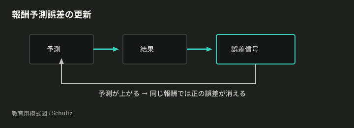
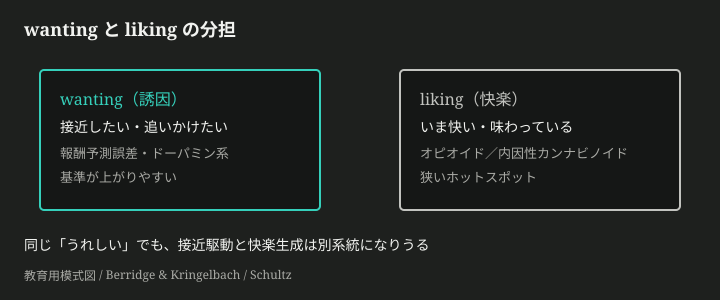
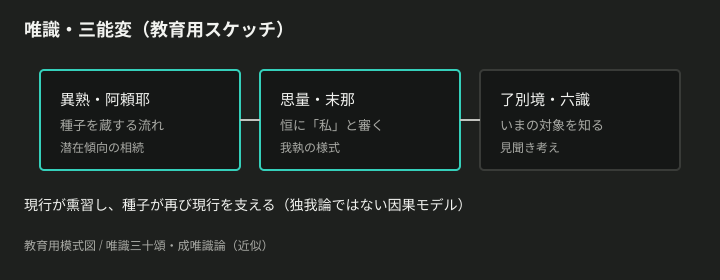
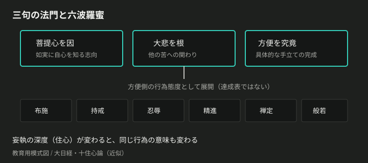
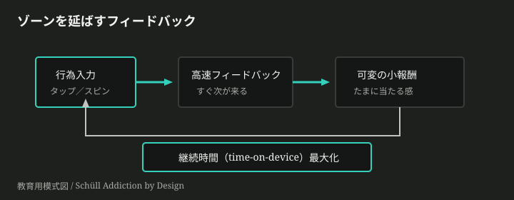

願いの摩擦から入る
幸せになりたい、という願いは疑いようがない。けれど朝の画面は通知でこちらを呼び、夜の画面は眠る直前まで小さな報酬を差し出す。仕事は成果を求め、育児は待ってくれず、睡眠負債は「前向きに生産しよう」という声を薄くする。そこへ、依存を断て、感謝を書け、ホルモンを整えろ、利他をせよ、お金では幸せは買えない、と互いにぶつかる助言が降ってくる。
ここで急いで「依存脱却から生産へ、生産から利他へ」と結論を置くと、いちばん大事な摩擦が消える。何を幸せとして測っているのか。何が自分の選択で、何が外から設計された接近なのか。余剰がない日の行為を、徳や努力の物語で上書きしていないか。入口に置くのは完成した人生観ではなく、すれ違いの構造だ。
この記事で辿る問題の列は、次の六つに絞る。
- 「幸せ」は、瞬間の快、人生評価、意味のどれを指しているのか。
- 欲しくなることと快いことは、なぜ同じに見えてずれるのか。
- 注意のさまよいと我執は、経験の質をどうねじるのか。
- 利他や修行の言葉は、なぜ自己最適化の宿題にも変わるのか。
- 依存は、意志の弱さではなくどのように設計されるのか。
- 睡眠負債と時間貧困の下で、どの主張の適用境界が先に破れるのか。
計測を分け、wanting と liking を分ける
帰り道に甘いものを買う。食べる前は強く欲しいのに、食べ終えた満足は短い。別の日、子どもが眠ったあとに何も達成していなくても、今日を悪くなかったと評価する。ここで「幸せ」を一語のまま扱うと、快、評価、意味、接近が同じ箱に落ちてしまう。
測っている自己を分ける
Kahneman が分けた経験する自己／評価する自己は、この混線をほどく入口になる。いま痛い、いま楽しい、という流れを生きる自己と、あとから「あの一日は良かった」と物語にする自己は、同じ測定器ではない(*1)。Ryan と Deci の整理でも、快い気分を中心に見る hedonic な幸福と、意味・成長・自律を含む eudaimonic な幸福は、同じ問いに見えて測っている層が違う(*2)。
だから、眠れていない親に「感謝を書けば幸せになる」と言うとき、それは瞬間の気分を変える話なのか、人生評価を変える話なのか、意味づけを支える話なのかを先に固定しないといけない。測定対象が動くと、効いたようにも、効かなかったようにも見える。
欲しいことと快いことを分ける
もう一つの混線は、wanting と liking で起きる。Schultz の報酬予測誤差の研究は、報酬そのものではなく「予測より良かったか」が学習信号になることを示した(*3)。予測していなかった報酬には強い正の誤差が出る。けれど予測が上がると、同じ報酬でも驚きは消える。
シミュレーションを開く — 予測が上がると、同じ報酬でも正の誤差が消える


Berridge らが強調したのは、ドーパミンを快そのものと読まないことだった。接近を強める wanting と、快楽反応としての liking は分けられる。liking にはオピオイド系や内因性カンナビノイド系などの小さな快楽ホットスポットが関わり、ドーパミン中心の一枚絵では足りない(*4)。欲しくて開いた画面が、開いたあとにそれほど快くないことは、この分離で読める。
基準が上がることを分ける
さらに Brickman らの快楽適応は、良い出来事や悪い出来事のあとでも主観的幸福が基準へ戻りうることを示した古典的な警告である(*5)。報酬が増えても、予測と基準が動けば、同じ刺激は薄くなる。
ここで「幸せホルモン」を揃えれば完成、という話は危うい。セロトニンが気分と関係することは否定されないが、日常の幸福を単純な不足や補充で説明できるほど証拠は強くない、という批判的整理もある(*6)。得られるのは、万能処方ではなく、測定と機構を分ける作法である。
さまよい・我執・唯識
皿を洗っているのに、頭は午前中の会議をやり直している。子どもの寝顔を見ているのに、明日の支払いと自分の失敗が交互に浮かぶ。出来事だけを足し算すれば悪くない日でも、注意が別の場所へ連れて行かれると、経験の肌ざわりは変わる。
注意のさまよいを測る
Killingsworth と Gilbert はスマートフォンで日常の経験をサンプリングし、人は報告時点の約47%で目の前の活動とは別のことを考えていたと示した(*7)。しかも心のさまよいは、多くの活動で低い幸福感と結びついていた。これは「考えるな」という道徳ではない。経験する自己が生きている瞬間に、注意がどこへ置かれているかが、感じ方の条件になるということだ。
ここで大事なのは、出来事の価値と注意の配置を混ぜないことである。仕事や育児が苦しいから不幸なのか、注意が反すうへ流れて経験を荒らしているのか、両方なのか。分けないと、生活条件の問題まで「気の持ちよう」にされてしまう。
我執を構造として読む
唯識は、このねじれを別の語彙で扱ってきた。『唯識三十頌』や『成唯識論』では、阿頼耶識、末那識、対象を分別する識の働きが整理される(*8)(*9)。ここで使うのは脳部位の対応表ではない。阿頼耶をどこかの器官、末那を特定ネットワークに貼るのではなく、経験がどのように「私のもの」としてまとまるかを見る教育用の構造として読む。
末那の我執は、経験をつねに「私にとってどうか」へ傾ける様式として読める。皿洗いの水音は水音で終わらず、「私はまた片づけている」「私だけが疲れている」という所有の形を帯びる。ここで「すべて幻覚」と言ってしまうと、生活条件も身体疲労も消してしまう。唯識の使い道は、出来事を否定することではなく、出来事が自己中心の様式を通って感じられることを見えるようにする点にある。

種子と熏習で癖を見る
種子と熏習は、同じ反応が繰り返しやすくなる癖の語彙として読むと扱いやすい。通知を見るたびに不安を確認する。褒められる場面だけで自分を測る。疲れた夜ほど短い報酬へ寄る。こうした反復は、単発の気分ではなく、次の感じ方を準備する。
この読みは、脳科学を仏教語で飾ることではない。注意のさまよいが経験を動かすという測定可能な知見と、我執や熏習が経験のまとまり方を記述する伝統的構造を、混ぜずに並べる。得られるのは、出来事だけでも、内面だけでも幸せを説明しきれないという中間の足場である。
三句・六波羅蜜・妄執
誰かのために動いたはずなのに、あとで自分の採点表を見ていることがある。
親切だったか。十分だったか。もっと正しく、もっと献身的にできたのではないか。関わりが深まったというより、自己最適化の宿題が一つ増えた感じが残る。
この違和感は、行為の量だけではほどけない。行為の前に、何を因とし、何に根を張り、どこで具体化するのかがずれている。
三句の法門は、行為を束ねる骨格である
『大日経』（Mahavairocana）の三句は、短く言えば「菩提心為因・大悲為根・方便為究竟」である。覚りへの志向が因になり、大悲が根になり、方便が究竟になる。
ここでの方便は、場当たりの技巧ではない。根にある悲が、状況の中で形を取るところまでを含む。誰かのために何かをした、という一点だけを切り出すと、行為はすぐに美談か負担になる。三句の法門は、その一点を因・根・究竟の束として読み直す。
だから「利他」は単独の美徳名では足りない。何に向かう志向なのか。どの悲から出たのか。どの場面で、どの手段として形になったのか。この三つが外れると、同じ行為でも、自己像を磨く作業になることがある。
妄執の深度は、関わりの詰まり方を読む
十住心の語彙では、妄執は浅い失敗名ではない。世界を「私のもの」「私の評価」「私の不足」として固めてしまう深度の記述である。空海の十住心は、心のあり方を粗い欲望から深い覚知へと層化して読む枠として使える。
この枠を、脳部位の対応表に変えない。前の章で見た末那の我執とも近いが、ここで大事なのは、関わりが詰まる場所を「性格の悪さ」だけにしないことだ。
たとえば育児中の一つの世話がある。子どもが泣き、手を止め、抱き上げる。外から見ればケアである。しかし内側では「これでよい親に見えるか」「自分ばかり損をしているのではないか」「この時間で別の成果を出せたはずだ」が同時に走る。そのとき問題は、ケアの行為が無いことではない。行為が、妄執の深度に巻き込まれている。
三句の法門は、ここで行為を責めない。因を問い、根を問い、形を問う。重心が変わる。
六波羅蜜は、六つの達成欄ではなく態度構造である
六波羅蜜は、布施・持戒・忍辱・精進・禅定・般若として語られる。見た目は六項目なので、日課表に変えたくなる。今日は布施を一回、忍辱を一回、禅定を十分。達成感はある。
しかし、その読み方では、六波羅蜜の力が弱くなる。六つは、関わりが形になるときの態度の分節である。手放す。境界を守る。耐える。続ける。静める。見分ける。これらは横並びのスタンプではなく、方便が現実の場面で粗くならないための構えとして働く。
般若がなければ、布施は自己犠牲の演技になることがある。禅定がなければ、精進は焦りの燃料になることがある。持戒がなければ、悲は相手の境界を越えることがある。
六波羅蜜は、全部を毎日満点にする表ではない。三句の法門のうち、方便が具体の場面へ展開されるとき、行為の質を崩さないための態度構造である。

オキシトシンの信頼ゲームは、三句と競合する小さな地図である
Kosfeld らの信頼ゲームでは、鼻腔内オキシトシンが対人信頼の行動を増やすと報告された。これは軽い話ではない。社会的接近やリスク受容が、身体の系と無関係ではないことを示す。
ただし、そこから日常の利他全体へ飛ぶと、地図が潰れる。信頼ゲームで測っているのは、ある条件のもとで他者へ資金を預ける行動である。三句の法門が扱うのは、志向・悲・具体化として関わりを束ねる枠である。片方は限定された実験の効果、片方は行為を読む構造である。
両者は同じ問いに触れるが、同じものではない。オキシトシンの地図は、関係の接近に一つの機構を与える。三句の地図は、その接近がどの志向と悲と方便に置かれているかを問う。
だから、子どもの世話の充実感を一つの物質名で閉じると、見えなくなるものがある。逆に、三句を科学の代用品にしても、実験が測った限定は消える。必要なのは勝敗ではない。地図の縮尺を取り違えないことだ。
得たものと失ったもの
ここで得たものは、関わりを自己採点から少し離す枠である。行為は、因・悲・方便の束として読める。六波羅蜜は、その方便が粗くならないための態度構造として読める。妄執は、関わりが自己像に絡め取られる深度として読める。
失ったものもある。すぐ使える幸福術としての軽さは失われる。六つの項目を塗れば安心できる、という単純さも残らない。オキシトシンという単語で利他を説明し切る快さも残らない。
それでよい。関わりは、軽く説明できるほど軽いものではない。
依存設計と二重拘束
やめたいのに、やめる理由が弱い。勝ったわけでも、深く満たされたわけでもない。ただ、指がもう一度だけ動く。
この「もう一度」は、生活者の内側だけで起きるとは限らない。報酬の出方、画面の速度、終わり目の消し方、損失の見え方。外側の設計が wanting を押し上げると、快いかどうかとは別に、接近の力だけが伸びる。
ゾーン／ludic loop は、勝利より継続を狙う
Natasha Dow Schüll が機械賭博で描いたゾーンは、興奮の頂点ではない。むしろ、世界が狭くなり、時間が薄くなり、プレイだけが滑らかに続く状態である。
この状態を支えるのが ludic loop である。小さな入力。すぐ返る反応。ときどき来る報酬。ほとんど途切れない次の機会。ここでは「勝つ」ことだけが中心ではない。time-on-device、つまり装置上にいる時間が伸びること自体が、設計の成績になる。
可変報酬が効くのは、結果が読めないからである。固定された報酬なら、予測はすぐ安定する。報酬予測誤差は小さくなり、wanting の更新も鈍る。ところが小さな当たりが不規則に入ると、予測は安定しにくい。
シミュレーションを開く — 可変間隔の小報酬は、固定報酬より試行を延ばしやすい
この sim が見せるのは、誘惑の強さではなく、試行が切れにくくなる形である。報酬が大きいから続くのではない。報酬がいつ来るか分からないから、切る判断が遅れる。
設計は wanting を増幅し、liking を保証しない
ここで前に分けた wanting と liking が戻ってくる。装置は「快い」を増やすだけではない。「近づきたい」「確認したい」「続けたい」を増やせる。
通知、連続再生、短い動画、ガチャ、ランキング、既読、ストリーク。これらをすべて賭博機械と同一視する必要はない。サービスごとに仕組みは違う。ただし、高速フィードバックと可変報酬と連続性が重なると、勝敗や満足よりも継続が前に出る。

気合の不足だけで説明すると、ここを見落とす。本人の選択は消えない。けれど、選択肢の形は設計されている。やめるボタンが遠く、始める合図が近く、区切りが溶けているなら、意思決定の場はすでに傾いている。
稼ぐ必要と消費誘発が、同じ時間を奪い合う
依存設計は、余暇の問題だけでは終わらない。生活者には、賃金を得る必要がある。家賃、食費、教育費、将来不安。まず稼がなければならない。
ところが、稼いだあとに残る時間は、別の設計にさらされる。疲れた夜ほど、強い意味や深い満足より、すぐ返る小さな報酬に手が伸びる。働いて得た時間が、回復ではなく、継続設計の中へ戻される。
これが稼得と消費の二重拘束である。稼がなければ生活が立たない。稼いだあとの可処分時間は、可変報酬と高速フィードバックで細かく回収される。自由時間はあるように見えるが、設計された接近の圧力を受け続ける。
前稿の「生産し、余剰を作り、利他へ回し、依存から離れる」というループは、この圧力への一つの応答になりうる。何かを作ることは、受け身の消費から時間を取り戻すことがある。分け与えられる余剰は、関わりを狭い自己防衛から広げることがある。
しかし、それは結論ではない。余剰があるときの候補である。睡眠が削れ、注意が割れ、感情制御が弱っているとき、同じループは新しい宿題に変わる。生産せよ、利他せよ、依存から抜けよ、という命令が、また wanting を刺激する。
得たものと失ったもの
ここで得たものは、依存を個人の内面だけに閉じない読み方である。ゾーン／ludic loop は、接近を外から増幅する設計として読める。time-on-device は、勝敗や満足とは別の目的関数として読める。二重拘束は、仕事と消費を別々の話にしないための言葉になる。
失ったものは、単純な非難である。本人を責めればよい、という読みは残らない。すべての娯楽を同じ危険物として扱う読みも残らない。生産・利他のループを万能処方として置く読みも残らない。
残るのは、時間がどこで増え、どこで奪われるかという硬い問いである。
地図で新主張を置く
失敗は、たいてい地図を混ぜたところで起きる。
「幸せホルモンを整える」は神経の話に見える。「感謝ジャーナル」は認知の話に見える。「副業で生産的に」は経済と時間の話に見える。「利他で満たされる」は関わりの話に見える。これらを一枚の善悪表に置くと、すぐに混線する。
教育用ツリーは近似である。厳密には、一つの主張が複数の層に同時に属する多所属グラフとして読む。
だから必要なのは、主張の是非を急ぐことではない。どの地図で、どの座標に置いているのかを先に言うことだ。
判断軸は、系譜／層／圧力で置く
新しいウェルビーイング主張を見たら、三つの軸で置く。
| 軸 | 問うこと |
|---|---|
| 系譜 | その主張は、計測分解、神経調節、認知・唯識、密教枠、依存設計、制約日常、言説のどこから来たのか |
| 層 | いま動かそうとしている主な場所は、定義、神経、認知、関わり、経済、制約、言説のどこか |
| 圧力 | 何に押されて出てきた主張か。混線した幸せ語、快楽適応、我執、自己最適化宿題、可変報酬、稼得強制、睡眠負債のどれか |
系譜は由来である。層は作用点である。圧力は、その主張が解こうとしている摩擦である。
たとえば「感謝を書けば幸せになる」は、認知の系譜を持つかもしれない。作用点は注意や評価の層にあるかもしれない。圧力は、さまよい、我執、あるいは睡眠負債で荒れた日常かもしれない。ここまで言って、ようやく効果を語る準備ができる。
Composition の L1 から L7 を、現在位置の棚として使う
層を置くときは、七つの棚にいったん入れる。
| 層 | 名前 | 主に含むもの |
|---|---|---|
| L1 | 計測・定義 | 経験する自己、評価する自己、快楽、ユーダイモニア |
| L2 | 神経調節 | wanting、liking、快楽適応、気分系、絆 |
| L3 | 認知・唯識 | 心のさまよい、阿頼耶、末那、種子 |
| L4 | 密教・大乗の枠 | 妄執、十住心、三句の法門、六波羅蜜 |
| L5 | 依存設計・経済 | ゾーン／ludic loop、time-on-device、稼得強制、生産・利他ループ |
| L6 | 制約日常 | 睡眠負債、情動制御、回復優先、適用境界 |
| L7 | 言説・主張 | 幸せホルモン、六波羅蜜の達成表化、お金と幸福、前稿ループ |
一つだけに入らないことは多い。それでも、主位置は選ぶ。主位置を選ばないと、測定も反論もぼやける。
「オキシトシンで利他が幸せになる」は、L2 の神経調節に足を置きながら、L4 の悲や方便を借り、L7 の通俗主張として売られることがある。このように複数所属を認めても、まずどこを主に動かす主張かを決める。
診断手順
操作は短いほうが崩れにくい。
- 系譜を置く。由来が複数あるなら複数書く。
- 層を置く。L1 から L7 のうち、主位置を一つ選ぶ。
- 圧力を置く。何に押されている主張かを言う。
- 測定対象を言う。瞬間の快、人生評価、意味、行動継続、睡眠のどれか。
- 直前の問題の副作用かを問う。たとえば依存設計への応答が、自己最適化宿題を増やしていないか。
この手順は、結論を遅らせるためではない。結論が違う層に飛ぶのを防ぐためである。
「ドーパミン・デトックス」は、L2 の神経調節を名乗りながら、実際には L5 の依存設計への生活規則として売られることがある。測定対象が睡眠なのか、行動継続なのか、主観的なすっきり感なのかで、評価は変わる。名前が神経でも、作用点が生活設計なら、そこで見る。
EX-place
入力素材:
仕事と育児で眠れていない親向け：朝5分の感謝ジャーナル＋夜のドーパミン・デトックスで幸せホルモンを整え、週末は副業で生産的に、家族には利他を、と広告するアプリ。
操作:
| 手順 | 書くこと |
|---|---|
| 1 | 系譜を置く。感謝ジャーナル、ドーパミン・デトックス、副業、利他が、それぞれどの由来を借りているか |
| 2 | 層を置く。主位置を L1 から L7 の一つに置き、複数所属を補助で書く |
| 3 | 圧力を置く。睡眠負債、自己最適化宿題、可変報酬、幸せホルモン言説のどれが強いか |
| 4 | 測定対象を書く。快、人生評価、意味、継続、睡眠のどれを改善すると言っているのか |
| 5 | 直前の副作用を書く。依存から離れる応答が、新しい time-on-device や宿題化を作っていないか |
自己点検:
製品の好き嫌いで閉じていないか。睡眠負債のある親に、余剰がある前提の生産・利他ループをそのまま載せていないか。三句の法門や六波羅蜜を、アプリ内の達成項目へ縮めていないか。神経調節の名前だけで、測定対象を言ったつもりになっていないか。
一つの配置例:
| 項目 | 配置 |
|---|---|
| 系譜 | 感謝は認知、ドーパミン・デトックスは神経調節と依存設計、副業は経済、生産・利他は前稿ループと密教枠の借用 |
| 主な層 | L6 制約日常。補助として L2 神経調節、L5 依存設計・経済、L7 言説・主張 |
| 圧力 | 睡眠負債と自己最適化宿題。加えて可変報酬への反動 |
| 測定対象 | 睡眠と情動制御が先。快や意味は、その後で分けて測る |
| 副作用 | 回復すべき時間が、アプリの継続利用と副業タスクに再配分される危険 |
この例の要点は、アプリを悪者にすることではない。眠れていない親に対して、どの層のどの圧力を先に扱うべきかを見失わないことである。
得たものと失ったもの
ここで得たものは、新主張を置く手つきである。系譜で由来を言い、層で作用点を言い、圧力で摩擦を言う。Composition の L1 から L7 は、そのための棚である。
失ったものは、すぐ効くかどうかだけで判断する速さである。速さは気持ちよい。だが、神経の名前で生活の圧力を語り、関わりの言葉でアプリの継続を正当化し、睡眠負債の上に生産性を積むと、効いたように見えるものが別の層を壊す。
地図を混ぜないだけで、結論はまだ出ていない。それでも、少なくとも議論の場所は見える。
制約日常と Frontier
眠れていない朝は、世界が少し尖って見える。
子どもの声が大きく聞こえる。通知が割り込む。皿が残っているだけで、責められているように感じる。そこで「もっと生産的に」「もっと利他的に」「依存を減らして余剰を作ろう」と言われると、その言葉は励ましではなく追加の負荷になることがある。
ここで割れるのは、やる気の有無ではない。余剰を作るループが先か、制御資源の回復が先かである。
一晩の睡眠欠乏が示す、狭いが強い事実
Yoo と Walker らは 2007 年の Current Biology 論文で、睡眠を奪われた参加者の情動反応を fMRI で調べた。報告では、睡眠欠乏群は否定的な刺激に対して扁桃体の反応が約 60% 大きく、内側前頭前皮質との機能的な結びつきが弱まっていた(*10)。
これは「眠いと機嫌が悪い」という日常語を、少しだけ機構へ押し込む。扁桃体は刺激の情動的な重要性に敏感で、前頭前皮質はその反応を調整する側に関わる。睡眠が削れると、刺激は強く入り、抑える側の足場は弱くなる。
ただし、この知見は一晩の急性睡眠欠乏である。何か月も断片的に眠る育児期、夜勤、介護、長時間労働の慢性負荷を、そのまま同じ数字で語ることはできない。方向の手がかりにはなる。用量と期間の証明にはならない。
この細さを残すことが、Frontier である。
競合する二つの読み
同じ日常を、二つのモデルが奪い合う。
一つは、制御資源の回復優先で読む。眠れていないなら、まず刺激を減らし、判断回数を減らし、回復の幅を作る。ここでの問題は、徳が足りないことではない。入力が強く、調整が弱い状態で、さらに自己最適化タスクを積んでいることだ。
もう一つは、余剰前提の生産・利他・脱依存ループで読む。生産して余剰を作り、その余剰で利他ができ、利他や家族安定が依存脱却を支える。余剰がある場面では、この読みは魅力を持つ。行為が外へ開き、依存設計に吸われる時間を取り戻す筋もある。
だが、睡眠負債のある週には順序が反転しうる。余剰を作るための行為が、余剰を前提にしてしまう。利他が、関わりではなく消耗した自己への宿題になる。脱依存が、回復時間を削る新しい管理アプリに置き換わる。
適用境界を明示すると、こうなる。睡眠が短く、情動反応が荒く、判断の小さな失敗が増えている制約期には、生産・利他・脱依存ループを主処方として積む前に、睡眠、刺激量、タスク量、支援の境界を見直す。臨床的な睡眠障害や抑うつの判断はこの記事の外に置く。ここで扱うのは、日常の制約下でモデルの順序が破れる場面である。
Frontier cards
慢性睡眠への外挿は、まだ細い。Yoo らの急性実験は、眠れない育児の年単位の生活をそのまま代表しない。必要なのは、同じ回路名を貼ることではなく、慢性負荷、断片睡眠、回復介入、家族支援を別々に測ることである。
密教と神経科学は、一対一に対応しない。三句の法門や六波羅蜜は、脳部位の別名ではない。悲をオキシトシンに、方便を前頭前皮質に、我執を特定回路に縮めると、伝統の構造も実験の限定も同時に壊れる。
デジタルのゾーンも、過度一般化してはいけない。可変報酬や time-on-device の設計は強い警告である。しかし、すべての画面、すべての娯楽、すべてのアプリを機械賭博と同じに置くと、サービスごとの差、利用者の目的、回復に役立つ接続まで見えなくなる。
この三つのカードは、結論を弱めるためではない。境界のない強い言葉が、制約下の人にもっと重くのしかかるからである。
得たものと失ったもの
得たものは、順序の判定である。余剰がある日には、生産、利他、脱依存が互いを支える可能性がある。余剰がない日には、同じ言葉が制御資源をさらに削る可能性がある。
失ったものは、いつでも回せる完成ループである。これは不便だ。けれど、不便さを残さないと、眠れていない親にまで「もっと整えよ」と言ってしまう。
制約日常では、正しい価値語ほど重くなることがある。
世の主張を分解する
疲れていると、主張は答えに見える。
依存を脱せよ。利他をせよ。生産で余剰を作れ。幸せホルモンを整えよ。六波羅蜜を日常に入れよ。お金では幸せは買えない。どれも、一文だけなら強く聞こえる。けれど一文の中には、事実、争点、測定、価値、利害が折り畳まれている。
折り畳まれたまま受け取ると、反論も信仰も粗くなる。分ける。
C1 — 依存脱却が家族のレジリエンスを上げる
- 誰の利害か: 前稿のレジリエンス言説、家族単位の自立を重く見る生活設計
- 共通事実: 生活には金銭、消費、サービス、関係、気分調整など複数の依存がある。依存先が少し減ると、危機時の選択肢が増える場面はある
- 争点: 何を依存と呼ぶか。ケアや相互扶助まで脱却対象にしていないか。個人や家族だけで外部構造から離れられる範囲はどこまでか
- 測定: 主観的レジリエンス、危機時の選択肢数、支出と時間の固定度、依存先の分散
- 隠れた価値: 外的脅威に備える家族、他者に振り回されない生活、能動性の回復
- 出典: 前稿 note は、個人と家族がよりよく生きる筋として、依存脱却、利他、生産の循環を置く(*11)
この主張は、相互依存を悪と見なした瞬間に危うくなる。脱却すべき依存と、支えとして残す依存を分けないと、家族の強さが孤立の別名になる。
C2 — 利他が幸せを作り、オキシトシンがその根拠だ
- 誰の利害か: 前稿、利他を科学で正当化したい自己啓発、通俗神経科学
- 共通事実: 信頼課題では、鼻腔内オキシトシンが他者へ資金を預ける行動を増やした報告がある。社会的接近が身体の系と無関係ではないことも否定しにくい
- 争点: 実験室の信頼ゲームを日常の利他へどこまで外挿できるか。三句の法門における悲や方便を、オキシトシンの効果と同一視してよいか
- 測定: 信頼ゲームでの投資額、自己報告幸福感、関係満足、継続的なケア行動
- 隠れた価値: 道徳的に良い行為を、科学的にも正しいと言いたい
- 出典: Kosfeld らはオキシトシン投与で信頼行動が増えると報告したが、一般的なリスク選好の上昇ではないと整理される(*12)
オキシトシンは、利他の全体説明ではない。小さな実験地図として読むなら使える。三句や六波羅蜜の代用品にすると、地図の縮尺が崩れる。
C3 — 生産余剰が利他と脱依存の正のフィードバックを回す
- 誰の利害か: 前稿、能動的人生像を保ちたい人、自己管理と家族安定を結びたい言説
- 共通事実: 時間、睡眠、注意、収入に余剰があると、他者へ分ける行為や依存設計から離れる行為を取りやすい場面がある
- 争点: 余剰とは何か。生産物なのか、睡眠なのか、注意なのか。睡眠負債のある週にも同じ循環を回せるのか
- 測定: 可処分時間、睡眠時間、主観的余裕、生産物、支援行動、依存的サービスの利用時間
- 隠れた価値: 自分で人生を前へ動かしている感覚、家族を守る主体でありたい感覚
- 出典: 前稿の循環主張に加え、睡眠欠乏で情動制御が崩れるという Yoo らの知見は、余剰の前提を疑わせる(*11)(*13)
ここが一番、きれいに見える。だから疑う価値がある。余剰を作るための生産が、余剰のない人に最初の義務として置かれると、循環ではなく負債になる。
C4 — 幸せホルモンを揃えれば幸せになれる
- 誰の利害か: 自己啓発、健康マーケティング、管理可能な幸福を売るサービス
- 共通事実: ドーパミン、オピオイド、内因性カンナビノイド、セロトニン、オキシトシン、コルチゾールなど、情動や接近やストレスには複数の生理系が関与する
- 争点: wanting と liking を混ぜていないか。セロトニン不足や単一物質の補充で日常の幸福を説明できるほど証拠は強いか。人生評価や意味を物質名で潰していないか
- 測定: 血中または唾液中の指標、自己報告気分、経験サンプリング、行動継続
- 隠れた価値: 自分を管理すれば幸せを作れるという安心、複雑な生活問題を身体の操作に縮めたい欲望
- 出典: Berridge と Kringelbach は快楽系の分担を整理し、ドーパミンを快楽そのものとは置かない。セロトニン単純説にも批判的整理がある(*14)(*15)
ホルモン名は、問題を小さくしてくれる。小さくなった問題が、測定対象まで消していないかを見なければならない。
C5 — 六波羅蜜を日常チェックすれば幸福に近づく
- 誰の利害か: 仏教自己啓発、日課化アプリ、行為を見える化したい学習者
- 共通事実: 六波羅蜜は、布施、持戒、忍辱、精進、禅定、智慧という大乗仏教の行為枠として伝統を持つ
- 争点: 六つの態度を達成スコアにしてよいか。儀軌や教義の文脈を外し、自己最適化の宿題へ変えていないか。三句の方便をチェック項目に縮めていないか
- 測定: チェック達成率、主観的充実、対人行動、日課の継続
- 隠れた価値: 行為を見える形にして安心したい。伝統の重みを、今日の生活改善に借りたい
- 出典: 六度は伝統的な行為枠だが、東密の文脈では三密や儀軌との関係も論じられ、単純な日課表には縮まらない(*16)
チェックは便利である。便利だから、いつの間にか目的になる。ここで問うのは、六波羅蜜の否定ではなく、完成スコア化の副作用である。
C6 — お金では幸せは買えない
- 誰の利害か: 通俗スローガン、反物質主義、現状を正当化したい立場、所得改善を重く見る政策側
- 共通事実: 所得と主観的ウェルビーイングの関係は多数研究されている。所得は少なくとも人生評価と関係する
- 争点: 幸せを人生評価で見るか、日々の感情で見るか。低所得層と高所得層を同じ線で見るか。頭打ちは誰に起きるのか
- 測定: 人生評価、感情的ウェルビーイング、経験サンプリング、対数所得
- 隠れた価値: お金に振り回されたくない価値観、または経済条件を幸福から切り離したい価値観
- 出典: Kahneman と Deaton は 2010 年に、人生評価は所得とともに上がる一方、感情的ウェルビーイングは当時のデータで年収約 7.5 万ドル付近の頭打ちを報告した。Killingsworth、Kahneman、Mellers の 2023 年再解析は、多くの人では感情的ウェルビーイングも所得とともに上がり続け、不幸度の高い一部で平坦化が見えると整理した(*17)(*18)
「買えない」と言い切ると、測定が消える。「買える」と言い切っても、意味が消える。所得の話は、幸せ語の混線をいちばん露出させる。
EX-doubt
入力: Claim C3「生産による余剰が利他と依存脱却の正のフィードバックを回す」
操作: 共通事実、争点、測定、隠れた価値のうち、いちばん怪しい点と足りない証拠を書く。
自己点検: 余剰を、時間、睡眠、注意、収入のどれとして置いたか。睡眠負債や育児の制約下で、同じ循環を回してよい境界に触れているか。全否定や全肯定で閉じていないか。
主張は、強いほど分解に耐える必要がある。分解しても残るものだけが、対話の材料になる。
問いでチャットへ渡す
構造を辿ると、最後に答えが欲しくなる。
どの生活が正しいのか。依存をどこまで断つべきか。利他はどこまで自分に課すべきか。お金や睡眠やホルモンの話を、結局どう組み合わせるべきか。けれど、ここで完成した生活モデルを置くと、ここまで分けてきたものがまた一つに固まってしまう。
残すのは、結論ではなく問いである。問いは、読者の生活例とぶつかったときにだけ形を持つ。
P1 — 幸せホルモンを分解する
- アンカー: C4, L2
- 思考の動き: 分解
- 状況側の理由: 物質名は安心をくれるが、wanting、liking、気分、人生評価、意味を一語に戻しやすい
- チャットへの種: 「幸せホルモンを整えろ」を、wanting、liking、証拠の弱い系に分解すると何が残るか。
この問いは、ホルモンの存在を否定するためではない。どの測定対象を動かしたいのかを、生活の言葉へ戻すためにある。
P2 — 余剰ループを止める境界を置く
- アンカー: C3, L6
- 思考の動き: 境界
- 状況側の理由: 睡眠が崩れている週には、生産や利他の言葉が回復資源を削る宿題に変わることがある
- チャットへの種: 睡眠が崩れている週に、生産・利他ループを「回すべきでない」境界はどこだと感じるか。
ここで見るのは、怠けの言い訳ではない。モデルの適用境界である。余剰がある日とない日を同じ倫理で扱うと、判断が粗くなる。
P3 — 子どもの世話をどの地図で読むか
- アンカー: C2, L4
- 思考の動き: 地図選択
- 状況側の理由: ケアの充実感は、神経調節の接近系としても、悲と方便の行為枠としても読めるが、同じものではない
- チャットへの種: 子どもの世話の充実感を、オキシトシン物語と三句の悲・方便のどちらで読むか。
一つの出来事に複数の地図が重なることはある。大事なのは、どの地図を主位置にするかを言えることである。
P4 — 六度チェックが重荷になる兆候を探す
- アンカー: C5, L4
- 思考の動き: 反例
- 状況側の理由: 六波羅蜜は行為の枠になりうるが、達成表になると自己最適化の宿題へ変わりうる
- チャットへの種: 六度チェックが重荷になった場面は？ 方便が宿題化した兆候は何か。
反例は、伝統を捨てるためのものではない。便利な枠が、いつ自分を狭くするかを見るための小さな照明である。
P5 — 依存とお金のスローガンを分ける
- アンカー: C1, C6, L5
- 思考の動き: 分解
- 状況側の理由: 「依存をやめろ」も「お金では買えない」も、事実、測定、価値、利害を混ぜたまま使われやすい
- チャットへの種: 「依存をやめろ」「お金では買えない」を、事実、争点、測定、価値、利害に分けると衝突点はどこか。
お金を低く見ても、依存を高く見ても、生活条件は消えない。何を測っているかを言ったときだけ、衝突点が見える。
チャットへの渡し方
問いを一つ選ぶ。自分の生活例を一つ添える。たとえば、眠れていない週、家族に優しくできなかった日、アプリを消したのに別の画面へ移った夜、収入の不安で「お金では買えない」が薄く聞こえた場面である。
チャットでは、この記事の構造をもう一度暗記する必要はない。選んだ問い、対応する Claim、関係する Path の段だけを材料にして、どこが分からないか、どの境界が怪しいか、どの測定が足りないかを出す。
完成したメンタルモデルは、ここには置かない。対話の中で、生活例、反例、測定、価値の順に形を作る。